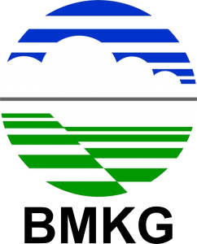

WebGIS Peta Kerawanan & Risiko Longsor Kota Sorong
Badan Meteorologi, Klimatologi, dan Geofisika (BMKG) • Analisis Grid 100m × 100m
Skor Tingkat Kerawanan Longsor
Sangat Rendah (1,9 - 2,32)
Rendah (2,32 - 2,74)
Sedang (2,74 - 3,16)
Tinggi (3,16 - 3,58)
Sangat Tinggi (3,58 - 4)
Skor Risiko Longsor
Sangat Rendah (1,9 - 4,3)
Rendah (4,3 - 6,7)
Sedang (6,7 - 9,2)
Tinggi (9,2 - 11,6)
Sangat Tinggi (11,6 - 14)
U
Skala 1 : -